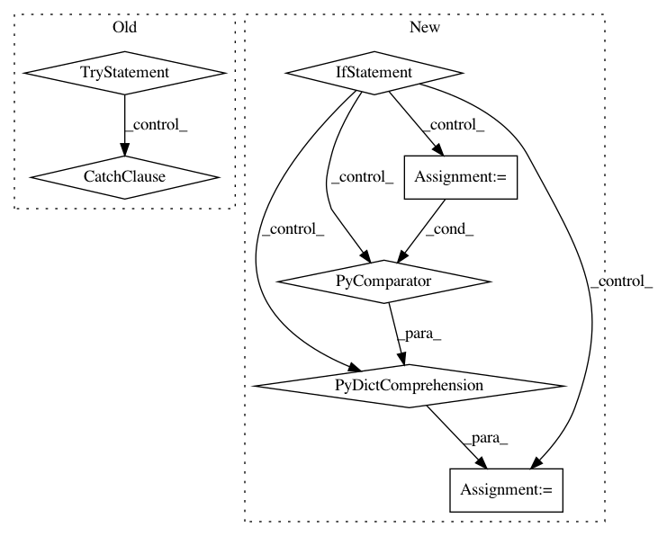

4a6c3c56f54bf1f85f35aaae76dc76e7cf567b8f,pandas/core/aggregation.py,,aggregate,#Any#Any#,531
Before Change
// no selection
else:
try:
result = _agg(arg, _agg_1dim)
except SpecificationError:
// we are aggregating expecting all 1d-returns
// but we have 2d
result = _agg(arg, _agg_2dim)
// combine results
def is_any_series() -> bool:
// return a boolean if we have *any* nested series
return any(isinstance(r, ABCSeries) for r in result.values())
After Change
from pandas.core.reshape.concat import concat
if selected_obj.ndim == 1:
// key only used for output
colg = obj._gotitem(obj._selection, ndim=1)
results = {key: colg.agg(how) for key, how in arg.items()}
else:
// key used for column selection and output
results = {
key: obj._gotitem(key, ndim=1).agg(how) for key, how in arg.items()
}
// set the final keys
keys = list(arg.keys())
// combine results
In pattern: SUPERPATTERN
Frequency: 3
Non-data size: 7
Instances
Project Name: pandas-dev/pandas
Commit Name: 4a6c3c56f54bf1f85f35aaae76dc76e7cf567b8f
Time: 2020-10-10
Author: 45562402+rhshadrach@users.noreply.github.com
File Name: pandas/core/aggregation.py
Class Name:
Method Name: aggregate
Project Name: home-assistant/home-assistant
Commit Name: 18daee9af67f6d70103322cf9317031dd2dd6431
Time: 2019-03-13
Author: 1937941+endor-force@users.noreply.github.com
File Name: homeassistant/components/tellstick/sensor.py
Class Name:
Method Name: setup_platform
Project Name: interactiveaudiolab/nussl
Commit Name: cf8ae336304fab035ef38ba8942eeb474beefaa4
Time: 2020-08-26
Author: eth@nmanilow.com
File Name: nussl/separation/base/deep_mixin.py
Class Name: DeepMixin
Method Name: get_metadata